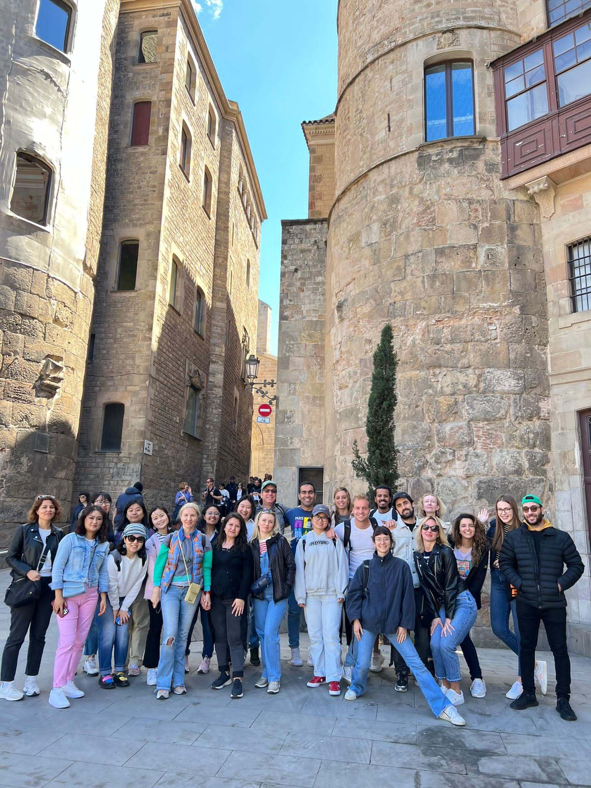
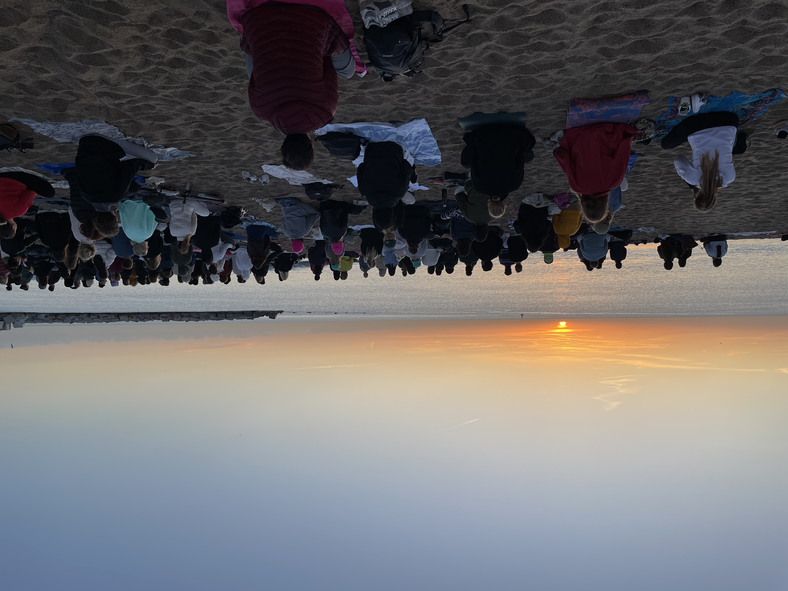

08 A busy spring period
A busy schedule,
back to school,
contact with home.

People who know me a little know that when I have an idea, I often want to go for it 100%. That drive is reflected in everything, even to a point where I sometimes get a little tired of it myself. I really met a golden guest here, Koen from Tilburg. A down-to-earth Dutchman who likes drinking a glass of beer and enjoys Barcelona. He told me that he is learning Spanish very slowly and that he has plenty of time to get better at it. So ′′ learning at ease ′′ really doesn't work for me. Living in Spain, something tells me that I should take the opportunity to learn Spanish now before I regret it later. Conversations that I can't follow well also feed this motivation. To practice my Spanish I can be found in the children's library for children books. Or I try to meet someone who also speaks a word of Spanish. But that motivation is not only for Spanish. At rugby I try to put on some weight and do more sports in calisthenics parks in the area. And with dancing I also want to be as good as those best dancers. Because I am so driven, I really notice that I am moving forward like a rocket, but also that I sometimes have to slow myself down a bit because it gets very busy every now and then.
My mother came to Barcelona for a weekend with Piet, the man she has been with for a while. Of course it took some getting used to seeing my mother with another man again four years after my father passed away. But just before I left for Barcelona, I got to meet him briefly. Although of course it will never be a replacement, he is a super friendly man with a good sense of humor. It was very nice to show them my life in Barcelona. Sometimes I miss Dad, of course, especially now that the familiar people are more distant. He would spontaneously video call and see if the other person answers. When I was still in front of the class as a substitute, he once came up with the idea of video calling with our primary school classes. Speaking of impulsive ideas, I'm probably not talking from a stranger.
 In order to really learn to speak Spanish, I started a four-month course in February in which you take 2 hours of Spanish during the day, four days a week. I am now studying Spanish daily with 25 students, including from Kazakhstan, Oman and Bulgaria. The teacher's name is Christina and she really is the best teacher I've ever had. Every day she tells you a nice piece of news about what's going on in Barcelona and only lets you into class when you have conjugate a verb correctly. She also told that Barcelona used to be called Barcino and was founded by the Romans around the year 0. After class I work on my homework in a study room and because 4 Chinese girls from my class also work here, we regularly sit together at the same table. So the working day looks like this: On the bike to the coworking space/office and programming there from 09:00 to 11:00, walk for half an hour to the Spanish class around noon and then back at 15:00 walking to the office to finish programming.
 Through an online community on the SLACK internet platform called 'AI for Conservation', I came into contact with Sean from Belgium and Lukas from the Czech Republic, two fanatics in the field of AI. Every spring Kaggle, an organization for programming competitions, organizes competitions where you get thousands of photos and get 3 months to build the best possible classification model. It's like participating in the World Cup, but in the field of AI, where lucrative prizes are sometimes awarded to the winners. After consultation we decided to participate in the Fathomnet competition where the aim is to classify all kinds of different marine animals. In this project I could finally really learn how to build an AI model from a-z. We will be setting it up in the coming weeks and despite the busy spring period I am very much looking forward to getting started with this in addition to programming for BOX 21 and Spanish.
 Living in Spain at a distance, it is not always easy to maintain contacts. Over the years I have of course met many people from Bavel, from the world tour, old colleagues and friends from my student days. Often friendships also originated in groups and do you call a group or someone individually? My life has changed enormously, but of course I have not forgotten the roots. Although you can't keep talking to everyone, I think it's important to stay in touch with home. I just really hate sending messages via WhatsApp because I can spend hours composing them. Sometimes I really regret that these days it is so much more common to text someone than to call someone. Maybe I'm a bit old-fashioned, but a direct call works better for both, and also prevents a lot of miscommunication.
Living in Spain at a distance, it is not always easy to maintain contacts. Over the years I have of course met many people from Bavel, from the world tour, old colleagues and friends from my student days. Often friendships also originated in groups and do you call a group or someone individually? My life has changed enormously, but of course I have not forgotten the roots. Although you can't keep talking to everyone, I think it's important to stay in touch with home. I just really hate sending messages via WhatsApp because I can spend hours composing them. Sometimes I really regret that these days it is so much more common to text someone than to call someone. Maybe I'm a bit old-fashioned, but a direct call works better for both, and also prevents a lot of miscommunication.
 Speaking of that, A good friend had booked a flight and was coming to Barcelona and I tried to indicate my expectations via an app (stupid, stupid stupid). That didn't go down well at all. Unfortunately I was no longer able to convince him that he was very welcome and he decided not to come anymore. Of course I was very disappointed. It was also carnival that weekend, so I crossed the threshold to call immediately and took a closer look at the parade in baviaonenland (Bavel, NL). The friends from home were in the most beautiful outfits and of course with a beer in hand enjoying the passing decorated floats. Of course video calling is not nearly the same as when you are there in person at such a moment, but it was still nice for a short impression. Jordi's phone, with whom I was video calling, was passed on so often that in the end people themselves no longer knew who the phone actually belonged to. I called them the name but of course they couldn't hear that.
Speaking of that, A good friend had booked a flight and was coming to Barcelona and I tried to indicate my expectations via an app (stupid, stupid stupid). That didn't go down well at all. Unfortunately I was no longer able to convince him that he was very welcome and he decided not to come anymore. Of course I was very disappointed. It was also carnival that weekend, so I crossed the threshold to call immediately and took a closer look at the parade in baviaonenland (Bavel, NL). The friends from home were in the most beautiful outfits and of course with a beer in hand enjoying the passing decorated floats. Of course video calling is not nearly the same as when you are there in person at such a moment, but it was still nice for a short impression. Jordi's phone, with whom I was video calling, was passed on so often that in the end people themselves no longer knew who the phone actually belonged to. I called them the name but of course they couldn't hear that.
Rugby has been a huge support so far. Being a programmer has the disadvantage that you can sink into your own thoughts very quickly. Doing what the trainer says for 2 hours is always a good distraction from that. The guys from the team have included me very well in the team this season. They give useful tips for beginners and are always up for a chat. Halfway through the training we split on attackers and defenders. Since January, the trainer thought it would be a good idea to assign me to the attackers instead of the defenders, a substitution that didn't work out very well. The teammates I suddenly had to train with said that I first had to watch parts such as the scrum. It took a few cold weeks and I was quite disappointed that I hadn't had a chance to do those exercises with them in all that time. Fortunately, in consultation with the coach, I was able to go back to the defenders, where I could run a bit more and the fun came back into the game.
 Last week, after 16 years, I met again the Catalan Albert Randon with whom I had an exchange project at the age of 15 at secondary school the Nassau (NL). He visited the family home in Blanes (Spain) during vacation as he currently lives in Natal in Brazil. We had a beer with his girlfriend and it was great to catch up. Of course we also took a picture and I don't want to withhold the comparison of then and now. At the farewell he let me know that I am always welcome with him and his girlfriend in Brazil.
Last week, after 16 years, I met again the Catalan Albert Randon with whom I had an exchange project at the age of 15 at secondary school the Nassau (NL). He visited the family home in Blanes (Spain) during vacation as he currently lives in Natal in Brazil. We had a beer with his girlfriend and it was great to catch up. Of course we also took a picture and I don't want to withhold the comparison of then and now. At the farewell he let me know that I am always welcome with him and his girlfriend in Brazil.
 I have covered almost all topics for this blog. You may have seen a bachata dance video pass by. The first time I saw a video like this, I directly had my opinion ready. Jeez, what an ordinary thing that is. And the people, what crazy people. I didn't think it was a dance but actually just a bit of sanding. For those who don't know this, this is a more sensual dance compared to salsa. You realize how hypocritical you are when you want to learn that dance yourself a few years later and absolutely love it. And with that little bit of sanding, there is also a lot of technique involved. Maybe bachata is even more challenging than salsa because your whole body moves with it. What also makes it great is that it is very popular among people my age. The steps I learn in class, I practice them in my bedroom so I don't forget them when I'm on the dance floor. Two weeks ago I had my first bachata congress, a kind of festival. I shared a room with Jordi, a very nice Spanish guy who, just like me, also likes socializing and also likes to make your own plans every now and then. We visited some bachata workshops together, enjoyed the dancing crowds and beautiful ladies. Although as a beginner it is not always easy to make the dance a success. Fortunately, you can go a long way with a Dutch smile.
I have covered almost all topics for this blog. You may have seen a bachata dance video pass by. The first time I saw a video like this, I directly had my opinion ready. Jeez, what an ordinary thing that is. And the people, what crazy people. I didn't think it was a dance but actually just a bit of sanding. For those who don't know this, this is a more sensual dance compared to salsa. You realize how hypocritical you are when you want to learn that dance yourself a few years later and absolutely love it. And with that little bit of sanding, there is also a lot of technique involved. Maybe bachata is even more challenging than salsa because your whole body moves with it. What also makes it great is that it is very popular among people my age. The steps I learn in class, I practice them in my bedroom so I don't forget them when I'm on the dance floor. Two weeks ago I had my first bachata congress, a kind of festival. I shared a room with Jordi, a very nice Spanish guy who, just like me, also likes socializing and also likes to make your own plans every now and then. We visited some bachata workshops together, enjoyed the dancing crowds and beautiful ladies. Although as a beginner it is not always easy to make the dance a success. Fortunately, you can go a long way with a Dutch smile.